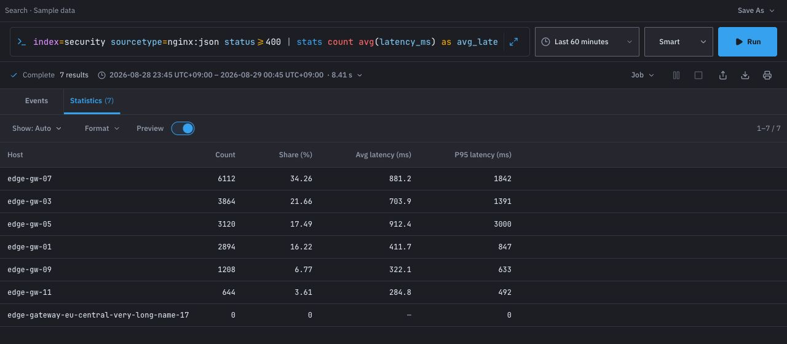

Bring logs in
Accept logs over HEC-compatible HTTP or syslog, monitor files, and receive Sciuro TCP inputs.

Rust-native · self-hosted
Sciuro collects and indexes operational logs. Investigate events with SPL-style searches, inspect results in the browser, and turn scheduled searches into alerts.
Search workspace
Write an SPL-style query and review events or statistics from the same workspace.

What Sciuro does
Accept logs over HEC-compatible HTTP or syslog, monitor files, and receive Sciuro TCP inputs.
Run SPL-style queries and inspect raw events or tabular results in the web interface.
Schedule searches, configure alert actions for scheduled results, and review triggered-alert history.